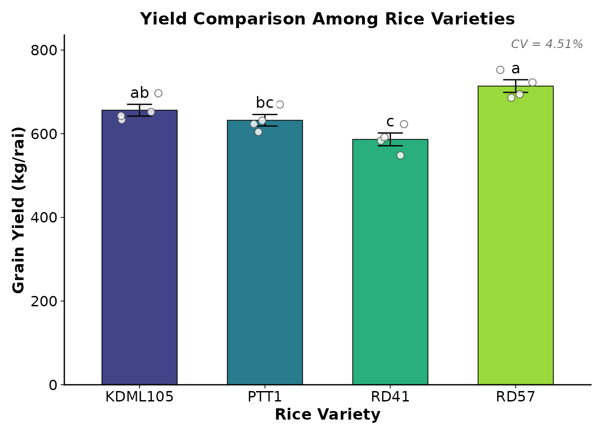
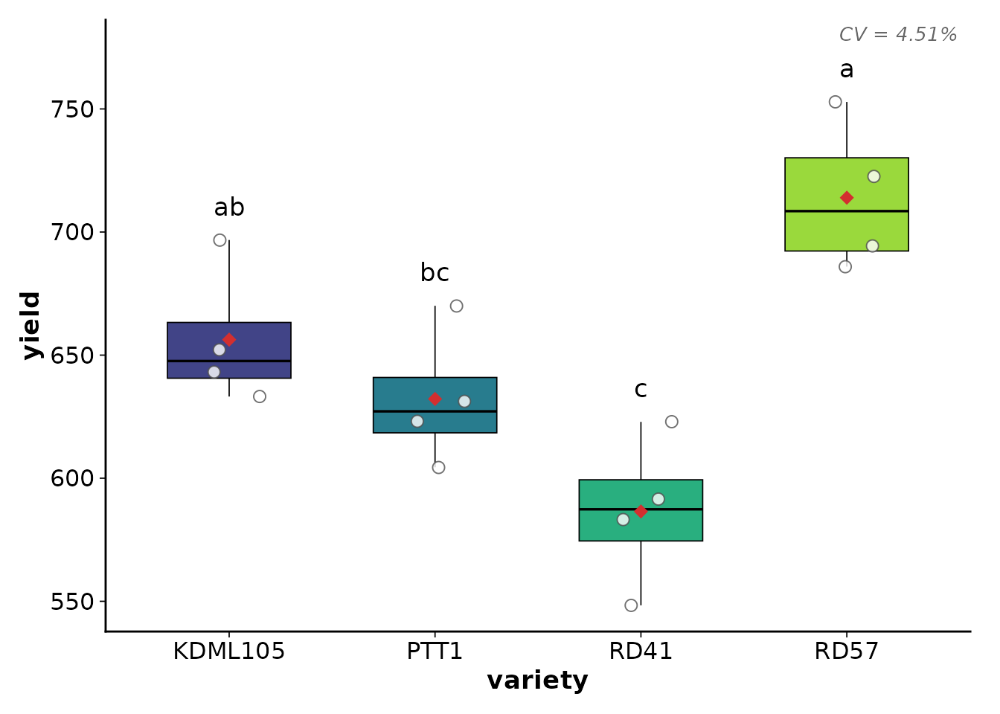
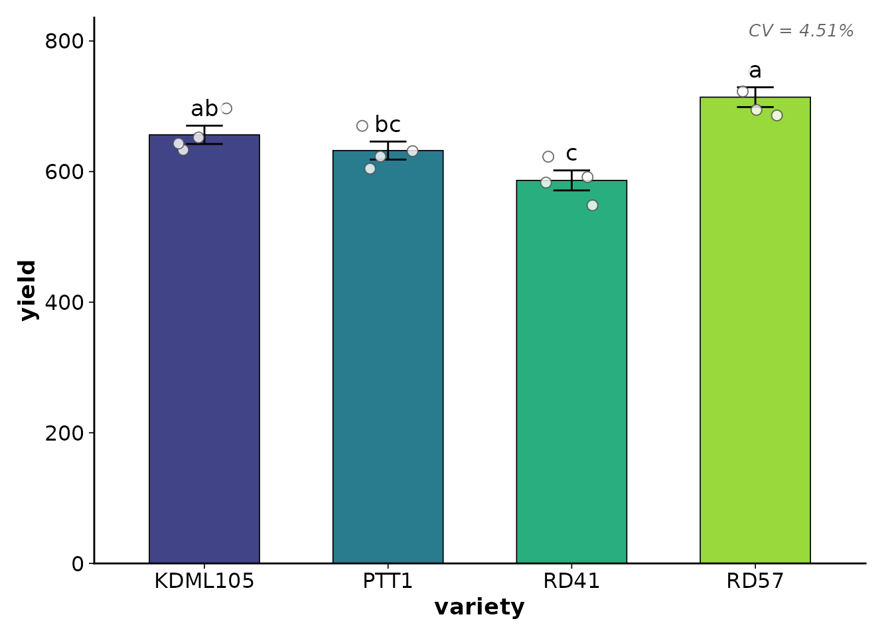
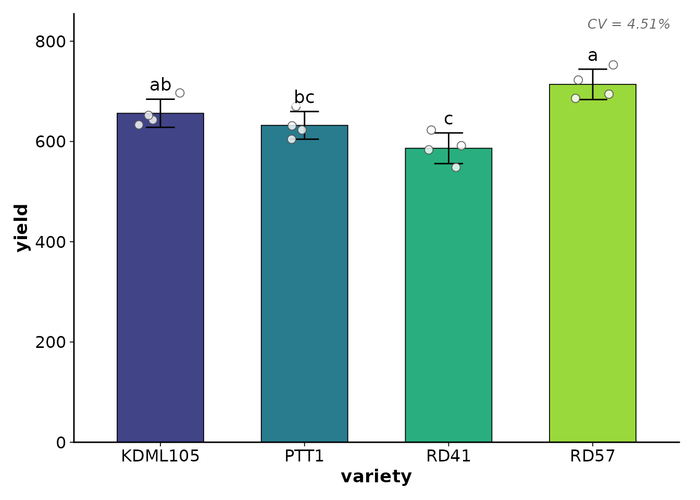
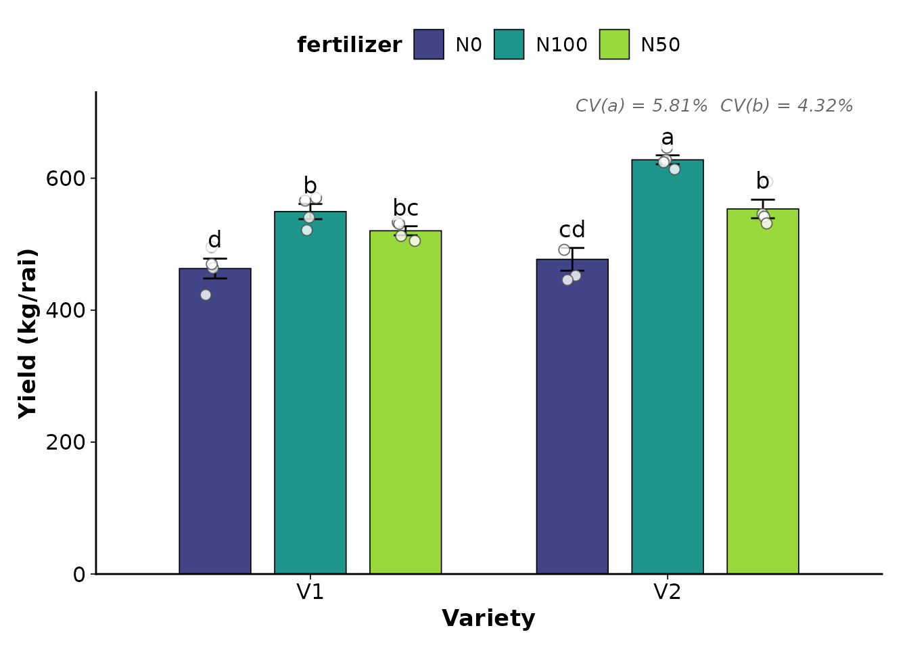

การจัดจาน: สร้างกราฟ Publication-Ready ด้วย plot_cooked()
plotting-results.Rmdภาพรวม
plot_cooked() รับผลจาก cook_crd() /
cook_rcbd() / cook_split() แล้วสร้างกราฟ
publication-ready อัตโนมัติ พร้อมคุณสมบัติ:
- เลือก Bar graph หรือ Boxplot อัตโนมัติตามจำนวนซ้ำ
- ใส่ ตัวอักษรทางสถิติ (a, b, c) จาก post-hoc อัตโนมัติ
- แสดง จุดข้อมูลดิบ (jitter points) ซ้อนบนกราฟ
- แสดง Error bar (SE หรือ SD)
- สไตล์สำหรับ วารสารวิชาการ (พื้นขาว ไม่มี gridlines เส้นแกนชัดเจน)
- รองรับ Colorblind-friendly palette (viridis, grey, set2)
เตรียมข้อมูลตัวอย่าง
set.seed(123)
rice_data <- data.frame(
variety = rep(c("KDML105", "RD41", "RD57", "PTT1"), each = 4),
rep = rep(1:4, times = 4),
yield = c(
rnorm(4, 650, 30), rnorm(4, 580, 25),
rnorm(4, 710, 35), rnorm(4, 620, 28)
),
height = c(
rnorm(4, 120, 5), rnorm(4, 110, 6),
rnorm(4, 130, 4), rnorm(4, 115, 7)
)
)
washed <- wash_rice(rice_data, treatment_col = "variety", rep_col = "rep",
verbose = FALSE)
tasted <- taste_rice(washed, response = c("yield", "height"),
treatment = "variety",
mode = "both", plot = FALSE, verbose = FALSE)
cooked <- cook_crd(washed, response = c("yield", "height"),
treatment = "variety", tasted = tasted, verbose = FALSE)การใช้งานพื้นฐาน
Plot ทุกตัวแปร
plot_cooked(cooked)ปรับแต่ง Labels
plot_cooked(
cooked,
response = "yield",
y_label = "Grain Yield (kg/rai)",
x_label = "Rice Variety",
title = "Yield Comparison Among Rice Varieties"
)
เลือกประเภทกราฟ
อัตโนมัติ (auto)
plot_type = "auto" (ค่าเริ่มต้น) จะเลือกตามจำนวนซ้ำ:
- n per group <= 4 → Bar graph + Error bar + Jitter points
- n per group > 4 → Boxplot + Jitter points + Mean dot
บังคับ Bar graph
plot_cooked(cooked, response = "yield", plot_type = "bar")บังคับ Boxplot
plot_cooked(cooked, response = "yield", plot_type = "box")
สังเกตว่า Boxplot จะมี จุดแดง (diamond) แสดงค่าเฉลี่ย
เปลี่ยน Palette
Viridis (default) — Colorblind-friendly
plot_cooked(cooked, response = "yield", palette = "viridis")
Error Bar: SE vs SD
# Standard Error (default)
plot_cooked(cooked, response = "yield", error_type = "se")
# Standard Deviation
plot_cooked(cooked, response = "yield", error_type = "sd")
ซ่อน/แสดงองค์ประกอบ
# ซ่อนจุดข้อมูลดิบ
plot_cooked(cooked, response = "yield", show_points = FALSE)
# ซ่อนตัวอักษรทางสถิติ
plot_cooked(cooked, response = "yield", show_letters = FALSE)ปรับขนาดต่าง ๆ
plot_cooked(
cooked,
response = "yield",
font_size = 14, # ขนาดฟอนต์พื้นฐาน
bar_width = 0.7, # ความกว้างแท่ง
point_size = 3, # ขนาดจุด jitter
jitter_width = 0.1, # ความกว้างการกระจายจุด
letter_size = 5, # ขนาดตัวอักษร a,b,c
letter_nudge = 10 # ระยะยกตัวอักษร (หน่วยเดียวกับ Y axis)
)บันทึกเป็นไฟล์
# บันทึกเป็น PNG
plot_cooked(
cooked,
response = "yield",
save_path = "figures/yield_comparison.png",
save_width = 7, # inch
save_height = 5, # inch
save_dpi = 300 # resolution
)
# ถ้ามีหลาย response จะต่อชื่อไฟล์อัตโนมัติ
# เช่น figures/results_yield.png, figures/results_height.png
plot_cooked(cooked, save_path = "figures/results.png")กราฟสำหรับ Split-plot / Factorial
เมื่อใช้กับ factorial หรือ split-plot กราฟจะแสดงแบบ grouped:
- แกน X = ปัจจัยที่ 1 (main-plot หรือ factor แรก)
- สี (fill) = ปัจจัยที่ 2 (sub-plot หรือ factor ที่สอง)
set.seed(456)
split_data <- data.frame(
variety = rep(rep(c("V1", "V2"), each = 3), 4),
fertilizer = rep(c("N0", "N50", "N100"), times = 8),
rep = rep(1:4, each = 6),
yield = rnorm(24, mean = rep(c(450,500,550, 480,560,620), 4), sd = 20)
)
washed_s <- wash_rice(split_data, verbose = FALSE)
tasted_s <- taste_rice(washed_s, response = "yield",
treatment = c("variety", "fertilizer"),
block = "rep", mode = "both", plot = FALSE,
verbose = FALSE)
cooked_s <- cook_split(washed_s, response = "yield",
main_plot = "variety", sub_plot = "fertilizer",
block = "rep", tasted = tasted_s, verbose = FALSE)
plot_cooked(
cooked_s,
response = "yield",
y_label = "Yield (kg/rai)",
x_label = "Variety"
)
สังเกตว่ากราฟจะแสดง:
- CV(a) (main-plot CV%) และ CV(b) (sub-plot CV%) ที่มุมขวาบน
- ตัวอักษรทางสถิติจาก interaction post-hoc (ถ้า interaction significant)
ใช้ ggplot object ต่อยอด
plot_cooked() คืน list ของ ggplot objects (invisible)
ที่คุณสามารถปรับแต่งเพิ่มเติมได้:
plots <- plot_cooked(cooked, response = c("yield", "height"))
# ปรับแต่งเพิ่มเติมด้วย ggplot2
library(ggplot2)
plots$yield + labs(caption = "Data from 2024 field trial")สรุปพารามิเตอร์ทั้งหมด
| พารามิเตอร์ | ค่าเริ่มต้น | คำอธิบาย |
|---|---|---|
cooked |
(required) | cooked_rice object |
response |
ทุกตัวแปร | เลือก response ที่จะ plot |
plot_type |
"auto" |
"auto", "bar", "box"
|
show_points |
TRUE |
แสดงจุดข้อมูลดิบ |
show_letters |
TRUE |
แสดง a, b, c |
error_type |
"se" |
"se" หรือ "sd"
|
palette |
"viridis" |
"viridis", "grey",
"set2"
|
y_label |
ชื่อ response | ชื่อแกน Y |
x_label |
ชื่อ treatment | ชื่อแกน X |
title |
ไม่มี | ชื่อกราฟ |
font_size |
12 |
ขนาดฟอนต์พื้นฐาน |
save_path |
NULL |
path สำหรับบันทึกไฟล์ |
save_dpi |
300 |
resolution ของไฟล์ |